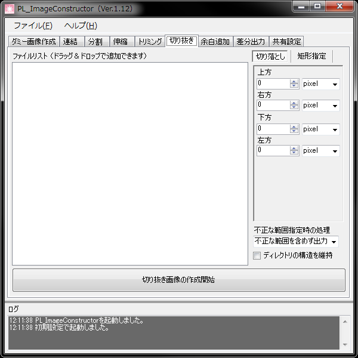

PL_ImageConstructor Manual
一括切り取り

概要
画像データの上下左右の情報を切り落とします。
一括トリミングとは違いピクセルの色情報は参照しません。
各種コントロール
切り落とし
元画像から上下左右を指定した量切り落とします。
矩形選択
始点のX座標とY座標、横幅と高さを指定して切り取りを行います。
不正な範囲指定時の処理
元画像に存在しない領域が出力時の必要領域となるケースの処理を指定します。
ディレクトリの構造を維持
登録されたファイルのフォルダ構成再現して出力します。